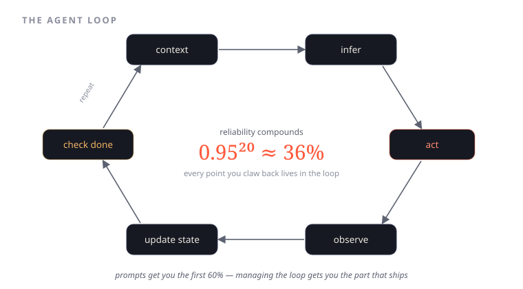

Loop Engineering: The Control Structure Under Every Agent
Prompts get you the first 60%. Managing the loop gets you the part that ships — because at 95% per step, a 20-step task succeeds only a third of the time.
In the last few pieces I kept circling the layers around the model — coordination, the harness, the verifier. This one goes inward, to the thing those layers are actually wrapped around: the loop. Because the more I build, the more I'm convinced that the agent loop is the real control structure under every agentic system, and almost nobody is engineering it on purpose.
Look at how we actually build agents today. First it was markdown. Then prompts. Then structured prompts. If a slightly experienced team gets hold of it, you open the repo and find an ocean of config files — called, ordered, and placed in some definite structure that made sense to whoever wrote it. And that structure quietly becomes the next bottleneck: inter-link calls between all those pieces, each one a place the chain can fray, each one capping what the model could have done if it had just been allowed to run the loop.

Why the loop is where production lives
Here is the uncomfortable arithmetic, and it's the whole reason loop engineering matters.
Reliability compounds — in the wrong direction. If each step in a task succeeds 95% of the time, that sounds fine until you chain it. A 20-step task finishes correctly only about 36% of the time. Not because any single step is bad, but because 0.95^20 is brutal. Every point of per-step reliability you claw back lives in the loop — in how you carry state, when you check, what you retry, when you stop.
That gap is the difference between two things that look identical in a demo:
- A system that wows once, on the happy path, in front of an audience.
- A system that people trust in production, on the path where step seven contradicts step two.
It's also the difference between a token bill that scales linearly and one that quietly explodes — because an unmanaged loop re-does work, re-reads context it already had, and spirals when it should have stopped.
What the loop actually is
Strip away the framework names and every agent is running the same control structure:
context → infer → act → observe → update state → check done → repeat
That's it. That's the loop. Loop engineering is treating each arrow in that cycle as something you design, not something the framework does for you by accident.
- context — what you put in front of the model this turn, and just as importantly, what you leave out. Context is a budget, not a dumping ground.
- infer — the model call. The part everyone obsesses over and the part that's least under your control, because you're renting it.
- act — the tool call, the write to the system of record. The only step with consequences.
- observe — reading the result honestly, including the failure.
- update state — so step seven remembers what step two figured out, instead of starting amnesiac.
- check done — the most underrated arrow. Knowing when to stop, escalate, or commit is a decision, and an unmanaged loop never makes it well.
Prompts get you the first 60% — the model is genuinely good, and a sharp prompt gets a convincing first pass. Managing the loop gets you the part that ships: the retries that don't thrash, the state that survives a multi-step task, the stop condition that fires before the token bill does.
This is where the harness earns its name
Everything I've written about the harness and the verifier layer lives here, in the loop. The harness is what carries state across iterations. The verifier is the check done arrow with teeth — a deterministic gate that decides whether this turn is allowed to commit or has to go around again. Coordination is what happens when the loop has to act across systems that don't agree. None of those layers mean anything if the loop underneath them is a pile of config files calling each other and hoping.
So engineer the loop. Decide what goes in the context each turn. Decide what counts as done. Decide when a failed observation triggers a retry versus an escalation. Measure per-step reliability and chase the points, because they compound.
There's a slightly funny thing here, and I'll say it out loud: we've come full circle with engineering. Control flow, state management, retries, idempotency, knowing when to stop — wasn't this supposed to be solved? It was, for deterministic systems. We just have to learn it again for systems where the most important step in the loop is a model we don't fully control. The loop is old. Engineering it around something stochastic is the new part — and it's the part that ships.